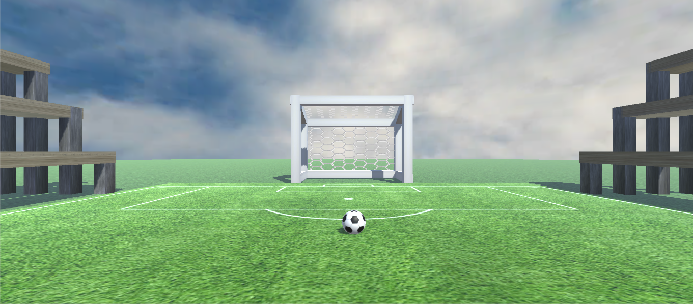
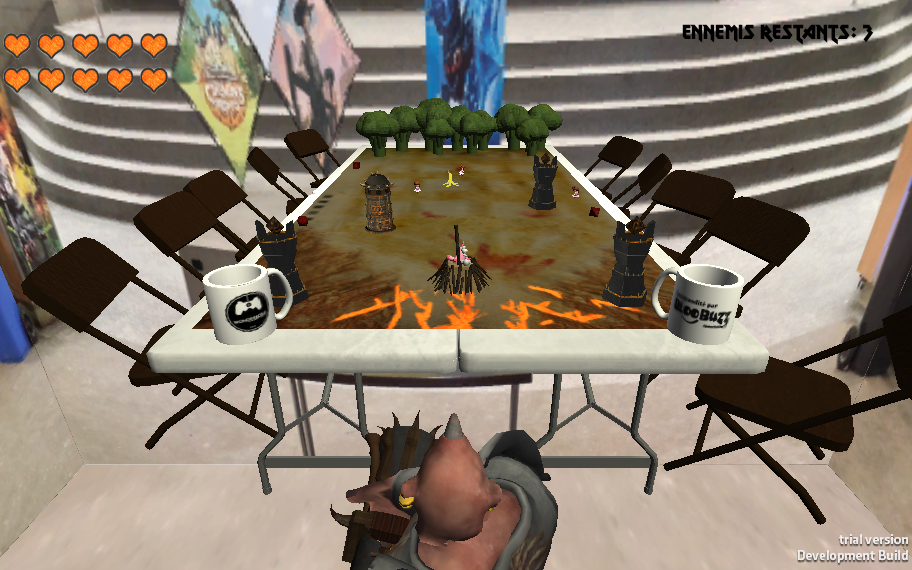
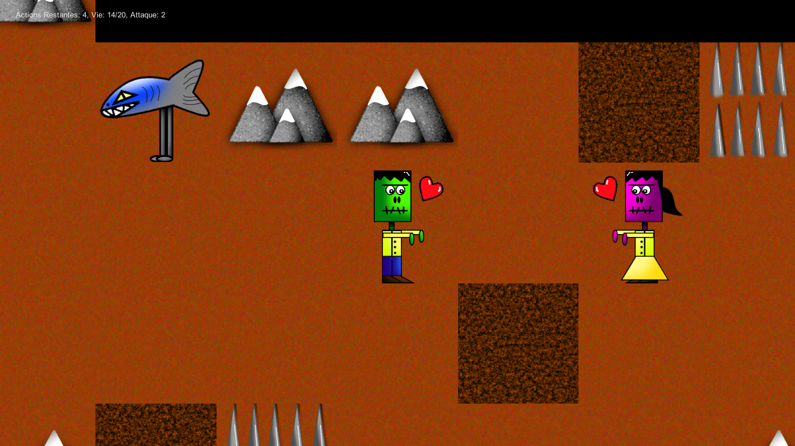
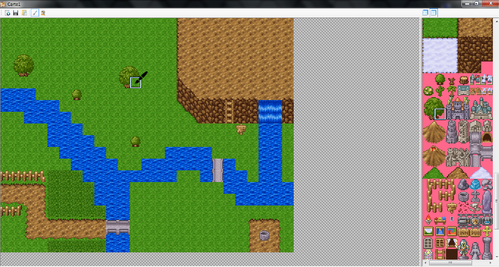

Introduction
Bienvenue sur ma page! Qui suis-je donc, me demanderez-vous? Je me nomme Tommy Lavoie et je suis un mordu des jeux vidéo depuis ma tendre enfance. Finissant du baccalauréat en informatique à l’Université du Québec à Chicoutimi, j’ai accompli un DEC en informatique de gestion au Cégep de Chicoutimi auparavant. Je n’ai pas appris pour autant à programmer à ce moment! En fait, j’ai touché à mes premières lignes de code en C++ tout juste avant d’arriver au secondaire. Il est facile d’en déduire que l’informatique est depuis longtemps une passion pour moi!
Mais plus encore, ma passion pour la conception et le développement de jeux vidéo est une flamme qui ne cesse de brûler. Dans mes premières années au primaire, j’ai connu un logiciel qui a changé le restant de mes jours : RPG Maker. Vous ne croiriez jamais le temps que j’ai pu passer devant un tel logiciel, qui m’a suivi le reste de mon primaire et de mon secondaire! C’est ainsi que j’ai pu découvrir ma voie et développer mon talent de programmation et de conception de jeux vidéo. Ici, vous y trouverez différentes réalisations et plusieurs projets dont j’ai contribués. Je vous souhaite donc une bonne visite!
Mes projets
Neurons Stimulator
Un grand dilemme a lieu dans la tête de Gaston. Chaque joueur joue le rôle du Démon ou de l'Ange pour l'aider à prendre la "bonne" décision. Connectez des cellules dans son cerveau pour gagner des points et remporter la victoire!
Pixelection
Du jamais vu! En cette année de 2015, tous les chefs de partis ont remporté les élections avec une quintuple égalité de votes. Dans une colère, la population a décidé d’organiser une course à pied jusqu’au sommet du parlement d’Ottawa. Le premier arrivé remporte les élections. Choisi ton chef et bat toi pour que ton parti entre au pouvoir!
Soccer Simulation Game
Soccer Simulation Game est un projet de recherche dans le domaine de la réalité virtuelle. Utilisant un téléphone mobile avec Google Cardboard, le joueur est immergé sur un terrain de soccer virtuel afin d’y pratiquer ses mouvements de soccer et d’y jouer une vrai partie, sans même utiliser un contrôleur de jeu classique.
Viens que j't'écrase
Les petites poupées envahissent encore la table de jeu! Défendez la licorne et survivez le plus longtemps possible en tirant des tours et des bananes sur le plateau de jeu. Mais attention, car elles arrivent de plus en plus nombreuses!
Occupation Zombie Story
Après une infestation de zombies, vous et votre bien-aimée avez été séparés. Jouez le rôle de deux zombies, seul ou avec un ami, et parcourez une carte remplie de monstres et d’obstacles afin de retrouver votre tendre moitié.
Touch The Circles
Touch The Circles est un jeu amusant où le but est de simplement toucher le plus de cercles possibles jusqu’à ce qu’un cercle explose. Mettez à l’épreuve vos réflexes et essayez de battre votre record pendant que les cercles apparaissent de plus en plus rapidement!
Concepteur de cartes
Le concepteur de cartes est un projet personnel qui avait pour but de reproduire un système de conception de niveaux semblable à celui que l’on retrouve dans RPG Maker.